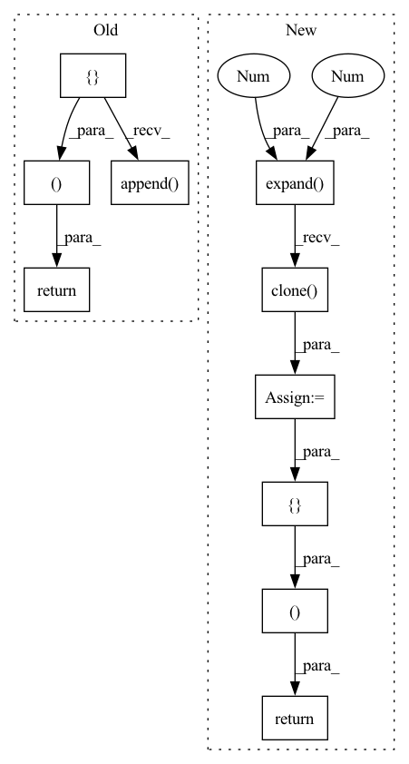

Pattern ID :9193

Before Change
check_transform_tensor(tensor)
jacobian_g = -group @ _hat_autograd_fn(tensor)
jacobian_p = group.view(tensor.shape[:-1] + (3, 3))
jacobians = []
jacobians.append(jacobian_g)
jacobians.append(jacobian_p)
return jacobians, _transform_from_impl(group, tensor)
class TransformFrom(lie_group.BinaryOperator):
@classmethod
After Change
size = get_transform_tensor_size(ret)
jacobian_g = -group @ _hat_autograd_fn(tensor)
jacobian_p = group
jacobian_g = jacobian_g.expand(*size, 3, 3).clone()
jacobian_p = jacobian_p.expand(*size, 3, 3).clone()
return [jacobian_g, jacobian_p], ret
class TransformFrom(lie_group.BinaryOperator):
@classmethod
In pattern: SUPERPATTERN
Frequency: 3
Non-data size: 10
Instances
Fragment ID: 33286587
Project Name: facebookresearch/theseus
Commit Name: f8f533dbde1f2fc8e8591949bb127c0488467a20
Time: 2023-05-10
Author: 6612911+fantaosha@users.noreply.github.com
File Name: theseus/labs/lie/functional/so3_impl.py
M Class Name: AnonimousClass
N Class Name: AnonimousClass
M Method Name: _jtransform_from_impl(2)
N Method Name: _jtransform_from_impl(2)
M Parent Class:
N Parent Class:
M File Name: theseus/labs/lie/functional/so3_impl.py
N File Name: theseus/labs/lie/functional/so3_impl.py
M Start Line: 666
M End Line: 671
N Start Line: 668
N End Line: 674
'>
Before Change
) -> Tuple[List[torch.Tensor], torch.Tensor]:
check_group_tensor(group0)
check_group_tensor(group1)
jacobians = []
jacobians.append(group1.transpose(1, 2))
jacobians.append(group0.new_zeros(group0.shape[0], 3, 3))
jacobians[1][:, 0, 0] = 1
jacobians[1][:, 1, 1] = 1
jacobians[1][:, 2, 2] = 1
return jacobians, group0 @ group1
class Compose(lie_group.BinaryOperator):
@classmethod
After Change
check_group_tensor(group1)
ret = group0 @ group1
size = get_group_size(ret)
jac0 = group1.transpose(-1, -2).expand(*size, 3, 3).clone()
jac1 = group0.new_zeros(*size, 3, 3)
jac1[..., _DIAG_3_IDX, _DIAG_3_IDX] = 1
return [jac0, jac1], ret
class Compose(lie_group.BinaryOperator):
@classmethod
'>
Fragment ID: 33286603
Project Name: facebookresearch/theseus
Commit Name: f8f533dbde1f2fc8e8591949bb127c0488467a20
Time: 2023-05-10
Author: 6612911+fantaosha@users.noreply.github.com
File Name: theseus/labs/lie/functional/so3_impl.py
M Class Name: AnonimousClass
N Class Name: AnonimousClass
M Method Name: _jcompose_impl(2)
N Method Name: _jcompose_impl(2)
M Parent Class:
N Parent Class:
M File Name: theseus/labs/lie/functional/so3_impl.py
N File Name: theseus/labs/lie/functional/so3_impl.py
M Start Line: 616
M End Line: 622
N Start Line: 619
N End Line: 624
'>
Before Change
jacobian_g[:, :, :3] = group[:, :, :3]
jacobian_g[:, :, 3:] = -group[:, :, :3] @ SO3._hat_autograd_fn(tensor)
jacobian_p = group[:, :, :3].view(tensor.shape[:-1] + (3, 3))
jacobians = []
jacobians.append(jacobian_g)
jacobians.append(jacobian_p)
return jacobians, _transform_from_impl(group, tensor)
class TransformFrom(lie_group.BinaryOperator):
@classmethod
After Change
jacobian_g[..., 3:] = -group[..., :3] @ SO3._hat_autograd_fn(tensor)
jacobian_p = group[..., :3]
jacobian_g = jacobian_g.expand(*size, 3, 6).clone()
jacobian_p = jacobian_p.expand(*size, 3, 3).clone()
return [jacobian_g, jacobian_p], ret
class TransformFrom(lie_group.BinaryOperator):
@classmethod
'>
Fragment ID: 33286584
Project Name: facebookresearch/theseus
Commit Name: f8f533dbde1f2fc8e8591949bb127c0488467a20
Time: 2023-05-10
Author: 6612911+fantaosha@users.noreply.github.com
File Name: theseus/labs/lie/functional/se3_impl.py
M Class Name: AnonimousClass
N Class Name: AnonimousClass
M Method Name: _jtransform_from_impl(2)
N Method Name: _jtransform_from_impl(2)
M Parent Class:
N Parent Class:
M File Name: theseus/labs/lie/functional/se3_impl.py
N File Name: theseus/labs/lie/functional/se3_impl.py
M Start Line: 755
M End Line: 762
N Start Line: 754
N End Line: 762